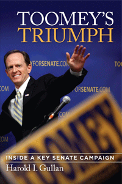

<body bgcolor="#FFFFFF" text="#000000" link="#0000FF" vlink="#CC0000" alink="#CC0000"><center><hr width="350" size="1" align="center" noshade>A veteran political observer's take on the critical Pat Toomey-Joe Sestak Senate race of 2010<hr width="350" size="1" align="center" noshade><p><a href="https://cdcshoppingcart.uchicago.edu/Cart/ChicagoBook.aspx?ISBN=9781439908358&&PRESS=temple" target="_top">Buy this book!</a> | <a href="https://cdcshoppingcart.uchicago.edu/Cart/Cart.aspx?PRESS=temple" target="_top">View Cart</a> | <a href="https://cdcshoppingcart.uchicago.edu/Cart/Cart.aspx?PRESS=temple" target="_top">Check Out</a></p><p></p></center><!--none//--><h1>Toomey's Triumph</h1>
<H2>Inside a Key Senate Campaign</H2>
<h3>Harold I. Gullan</h3>
<P>cloth 1-4399-0835-4 $35.50, Apr 12, <FONT COLOR=#990033>Available</FONT>
<br>Electronic Book 1-4399-0837-0 $35.50 <FONT COLOR=#990033>Available</FONT>
<BR> 256 pp
6x9
14&nbsp;halftones
</P><BLOCKQUOTE><I>"</I>Toomey’s Triumph<I> is a superb inside look at one of the most unusual political campaigns in recent history. Hal Gullan’s fly-on-the-wall approach nimbly captures the candidate who went from underdog to top dog in a matter of weeks. The most amazing aspect of his book is how Gullan chronicles the campaign decisions and strategy that reveal the making of the Senate candidate who wasn’t supposed to win. </I>Toomey’s Triumph<I> shows how the candidate’s successful politics ignored the social issues and won big on the only issue that counts—money and the economy."</I>
<br>&#151<b>Larry Kane</b>, Dean of Philadelphia anchors<I></I></BLOCKQUOTE>
<P>The 2010 Pennsylvania Senate election provided high drama from the electrifying primary season elimination of long-time incumbent Arlen Specter right through the hotly contested general election battle between relative newcomers Pat Toomey and Joe Sestak. Their battle featured not only a close, down-to-the wire race, but represented a case study of the political divide that characterizes contemporary American politics. Yet, despite the close race and the wide divergence in views, both candidates largely ran a civil campaign.
<P>Veteran writer Hal Gullan obtained special access to the Toomey campaign early in the primary season. The result of that privileged perspective, <I>Toomey's Triumph</I> offers both an inside look at and a Philadelphian's reflections on a riveting election. Gullan's astute month-by-month narrative distills the events of the year-long battles through the high drama and the day-to-day grind of grassroots organizing and campaigning. He relates where the candidates appeared, what they said, and how the media pundits responded to their various gambits. He makes wry observations on the efficacy of each candidate's campaign ads and strategies and offers insightful analyses of the ups and downs of the polls.
<P><I>Toomey's Triumph</I> provides an engaging chronicle of a critical campaign.
<BR>&nbsp;<h2>Excerpt</h2><P>Excerpt available at <a href="http://www.temple.edu/tempress">www.temple.edu/tempress</a></p>
<BR>&nbsp;<h2>Reviews</h2>
<p><i>"With access to the Pat Toomey camp’s daily doings, Hal Gullan gives readers an insider’s take on why Toomey had the right stuff in ideas, organization, and character to scare Arlen Specter out of the Republican Party and to take down Joe Sestak in one of the most-watched Senate races in 2010. </i>Toomey’s Triumph<i> is a campaign biography in the old style—never afraid, sometimes opinionated and even partisan, and always perceptive about what counts in winning, or losing, a big election. Gullan brings us to the reporters’ roundtable, where we want to stay."</i><br> <b>&#151Randall M. Miller</b>, Saint Joseph’s University
<p><i>"In </I>Toomey’s Triumph<I>, Hal Gullan expounds and displays his own considerable political knowledge and his honed insights as a dedicated student and perpetually interested observer of American politics—especially Philadelphia and Pennsylvania politics. His analysis, absent of ideological judgment or weight, is deftly drawn and skillfully placed within historical context. Gullan’s humorous, often genuinely enlightening commentaries are enhanced by an admirably fluid and lively conversational writing style. </i>Toomey’s Triumph<i> is a strikingly high-minded view of the election and of the two contenders."</i><br><b>&#151James Hilty</b>, author of <i>Robert Kennedy: Brother Protector</i> (Temple)
<BR>&nbsp;<h2>Contents</h2><P>
<p>Preface: Where I’m Coming From
<br>1. Prelude: March 2010
<br>2. Three Paths to April
<br>3. Setting the Table: May
<br>4. “Nothing Inappropriate Happened”: June
<br>5. The 80 Percent Solution: July
<br>6. Maintaining Momentum: August
<br>7. Seeking the Summit: September
<br>8. Driving it Home: October
<br>9. Toomsday: November 2, 2010
<br>Index
</P><BR>&nbsp;<H2>About the Author(s)</H2>
<table><tr><td valign="top"><img src="/tempress/authors/2199_au.gif" height="90" width="75"></td><td width="100%" valign="middle"><p><b>Dr. Harold I. Gullan</b> is a historian whose books include <i>The Upset That Wasn't: Harry S. Truman and the Crucial Election of 1948, Jumping Through Hoops: Why Penn Wins</i> and <i>First Fathers: The Men Who Inspired Our Presidents.</i></P></td></tr></table>
<BR><H2>Subject Categories</H2>
<p><A HREF="/tempress/political.html" TARGET="_top">Political Science and Public Policy</a>
<BR><A HREF="/tempress/philly.html" TARGET="_top">Philadelphia Region</a>
<BR>
</p>
<p align="center"><a href="https://cdcshoppingcart.uchicago.edu/Cart/ChicagoBook.aspx?ISBN=9781439908358&&PRESS=temple" target="_top">Buy this book!</a> | <a href="https://cdcshoppingcart.uchicago.edu/Cart/Cart.aspx?PRESS=temple" target="_top">View Cart</a> | <a href="https://cdcshoppingcart.uchicago.edu/Cart/Cart.aspx?PRESS=temple" target="_top">Check Out</a></p><p><font face="Arial" size="1"><a href="copyright.html" onMouseOver="window.status='Web Copyright Policy';return true;" onMouseOut="window.status=''" title="Web Copyright Policy">&copy;</a> 2015 <a href="http://www.temple.edu" target="new" onMouseOver="window.status='Link to Temple University home page';return true;" onMouseOut="window.status=''" title="Link to Temple University home page">Temple University</a>. All Rights Reserved. http://www.temple.edu/tempress/titles/2199_reg.html</font></p>